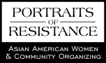

|  |
MethodologyThis research study focuses upon the narratives of female Asian American community organizers in terms of: (1) the factors that led them to initial community organizing efforts (e.g., personal experiences of oppression, key relationships, role models, education), (2) the impact that community organizing has had on their identity development and sense of self (e.g., level of integration of) and (3) the factors that sustain them in this work (e.g., key relationships, role models, education). This study was designed as a qualitative exploratory study with flexible methods. Data collection was completed using semi-structured interviews. Two pilot interviews were conducted in order to gather feedback about the research questions prior to beginning data collection and a consistent process of clarification and meaning verification was conducted with subjects throughout the interviews. SamplingPrimary recruitment took place through the researcher's personal network of colleagues, friends and acquaintances across the country (primarily in Massachusetts, New York and Chicago) who were aware of the purpose and topic of the study. A snowball sampling method was incorporated into this process as well. Potential participants were sent an e-mail with the following criteria: participants were required to self-identify as Asian American women, to be over age 18 and to have participated in community organizing for at least two years. Based on a combination of the tenets of the Alinsky (1972) model of organizing and a women-centered approach (Stall & Stoecker, 1998; Ackelsberg, 1988; Gutierrez & Lewis, 1994), community organizing was defined as: includes social action organizing and public sphere organizing as well as private sphere work including organizing to secure tenants rights, local daycares, youth programs, or any efforts to alter living conditions or policies that threaten women's families and communities. Participants then self-selected by contacting the researcher. No formal screening of participants' definitions of community organizing or their organizing work history was conducted. Demographic Profile of SampleThe sample consisted of twenty participants, all of whom self-identified as Asian American women over the age of 18 years who have worked as community organizers for at least two years. Study participants (n = 20) ranged in age, at the time of the interview, from 20 to 46 years old, with a median age of 30 years (SD = 5.7). Age of initial involvement in activism ranged from 14 to 26 years old, with a median age of 20 years (SD = 4.2). On average participants reported a duration of 9 years of organizing experience (SD = 4.7). In terms of birthplace, 50% (n =10) of the participants were born in the United States (U.S.). Of the remaining 50% (n =10) of participants, three women were born in Korea, three women were born in the Philippines, one in Laos, one in Vietnam, one in Taiwan and one in India. Three of these women came to the U.S. because they were adopted by American families, two others came with their families as refugees, two more described their family deciding to immigrate for political reasons, and the remaining three stated that their families immigrated to the U.S. for economic reasons. At the time of the interview, all 20 participants were U.S. citizens. Data on racial identity, ethnic identity, sexual orientation and socioeconomic status were gathered according to participant description. Participants were asked oral questions on each without being offered choices. Although all participants self-identified as Asian American women in order to qualify for the study, participants were given the opportunity to state how they prefer to identify their race and ethnicity.
In terms of socioeconomic status, 75% (n =15) of participants self identified their socioeconomic status during childhood as middle class or higher. One participant identified her family's socioeconomic status in the Philippines as middle class but in the United States as working class. She has been included under working class in the table below. All of the participants identified themselves as currently middle class or higher. One participant who was currently enrolled in an undergraduate program identified as upper middle class because she was still living in the home of her family of origin.
The majority of participants had attained at least a Bachelor's degree, with 50% (n =10) of participants having attained an advanced degree as well.
In terms of sexual orientation, 80% (n =16) of participants self identified as heterosexual or straight, while 10% (n = 2) identified as queer and 10% (n =2) identified as bisexual. On average, these women were affiliated with three formal or informal ethnic or cultural groups, organizations or associations and one feminist or women's groups, organizations or associations. Five women were affiliated with spiritual or religious groups, organizations or associations. The following religions were named by participants as the religion practiced by their parents, their extended families or by themselves: Buddhism, Catholicism, Christian Methodist, Hinduism, Islam and Judaism. In response to a question regarding therapy, 80% of the participants (n =16) stated that they had engaged in individual therapy in the past or were currently engaged in individual therapy as clients. Therapy experiences ranged from one session to eight years. Twenty percent (n = 4) of participants identified as having participated in group therapy. ProcedureThis research project was reviewed and approved by the Smith College School for Social Work Human Subjects Review Committee on March 31, 2005 (see Appendix A). The data in this study was collected through interviews conducted over the phone and audiotaped between April 9 and May 5, 2005. The interviews ranged from one to two hours depending on the time needed to go through all interview questions. Participants received a consent form to review and to sign before beginning the interview process (see Appendix C). The consent form introduced the researcher, outlined the study's purpose and clarified the participant's role in the study. The form also described potential benefits and risks of participation in the study. Interviewees could benefit from the opportunity to explore and share their personal narratives about their experiences and from the process of contributing their narratives to the body of knowledge on this topic. A risk involved in participation was the potential for the telling of their stories to cause these women to relive painful experiences from their lives. For this reason, a list of referral sources was provided to each participant with the informed consent form (see Appendix D). Additionally, the consent form advised participants that they could withdraw from the study at any point, for any reason, until May 15 when the findings section was written. The informed consent form outlined the procedures that would be used to protect and maintain participant confidentiality. In order to protect participants' privacy, audiotapes were used to record the interviews and were labeled with a number and date; no names were attached to the interviews. During the transcription process, the researcher removed all names and other identifying information. In accordance with federal regulations, audiotapes and transcriptions will be kept in a secured environment in a locked cabinet, separate from the consent forms, for three years following the completion of the research. After this time all data including tapes and transcripts will be kept locked and secured or destroyed. Data CollectionInstrumentBecause of the exploratory nature of this study, interview techniques were selected as the most appropriate method of data collection. The instrument consisted of a semi-structured interview guide with open-ended questions (See Appendix E). These questions focused on the following:
The identifying information questions focused on demographic data. The first section explored the experience of community organizing including the factors leading to initial involvement and motivation for initial participation. The second section built on the first to explore how community organizing impacts an Asian American woman's identity development and sense of self. The third section addressed the struggles inherent in community organizing and sought to elicit information on the motivations and rewards of sustained activism. Data AnalysisInterviews were tape recorded and transcribed to allow for accurate review and manual analysis of the data. Coding procedures were used to analyze the data in narrative form. This approach to data collection emphasizes a process labeled as "constant comparison" by which data is reviewed and compared throughout the collection and analysis phases to allow for the emergences of "?similarities, differences, and degrees of consistency of meaning" (Anastas, 1999, p. 424). Findings are reported in the following chapter according to emergent themes. Direct quotes are used in order to describe themes with as much richness and accuracy as possible. Identifying information such as participant and agency names and geographic location have been removed to ensure confidentiality. |
|||||||||||||||||||||||||||||||||||||||||||||||||||||||||||||||||||||||||||||||||||||||||||||||||||||